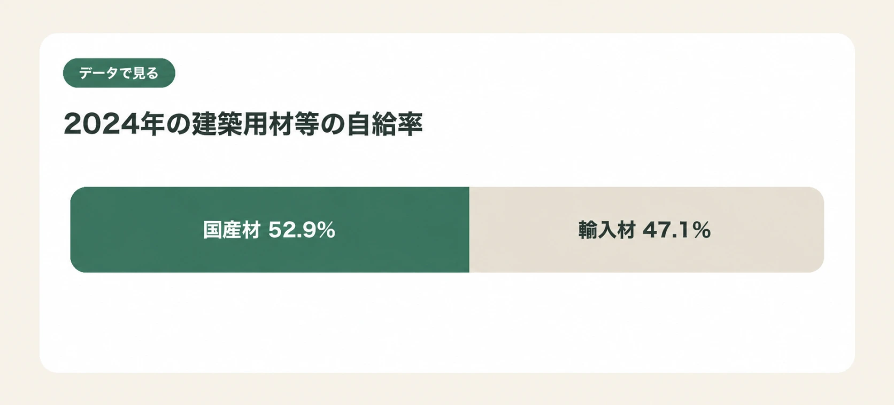
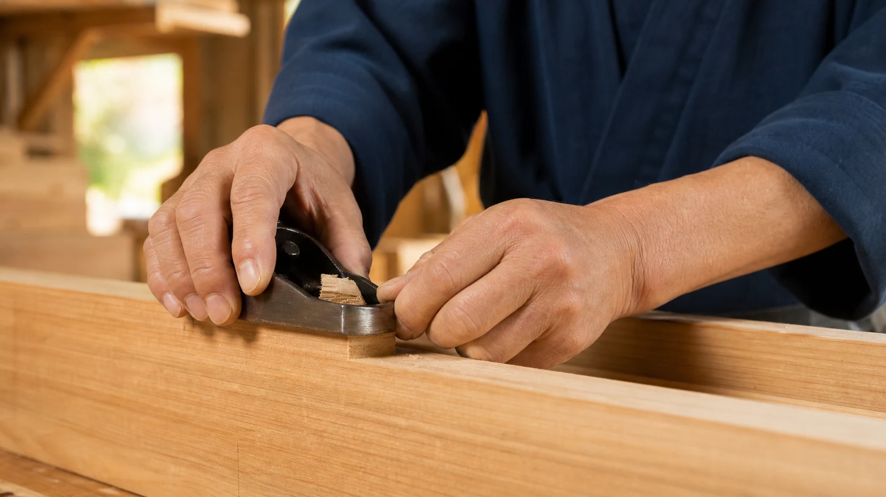

「円安」という言葉はニュースで頻繁に聞くようになりましたが、それが自分の家計や住まいにどう関わるのか、具体的にイメージしづらいという方も多いのではないでしょうか。この記事では、円安が住宅の建築費・リフォーム費用・エネルギー費用にどう波及するかの構造を整理し、「円安だから急いで」ではなく、落ち着いて備える視点をお伝えします。
1. 円安は暮らしのどこに届くのか
円安とは、外国通貨に対して円の価値が下がることを指します。輸入品を購入する際に、同じ量を買うのにより多くの円が必要になるため、輸入に依存する品目の価格に影響が及びやすくなります。
住まいに関わる領域では、輸入材や原油・LNG（液化天然ガス）など、為替の影響を受け得る調達物資があります。円安が進むと、これらの調達コストが上がり、巡り巡って新築やリフォームの費用、光熱費に影響する可能性があります。ただし、為替だけがコストを決めるわけではなく、需要と供給、物流費、人件費など複数の要因が絡み合っている点には注意が必要です。
2. 建築用材等と輸入材の関係
林野庁の「令和6年木材需給表」によると、2024年の建築用材等の自給率は52.9％でした。丸太換算で、国内供給のおよそ半分を国産材が占める一方、輸入材も47.1％を占めます。この値は用途区分としての「建築用材等」の供給割合であり、個々の木造住宅に使われる木材の比率を示すものではありません。
このように、建築用材等の国内供給は国産材だけで完結しているわけではありません。円安で輸入材の調達コストが上がると、建築やリフォームの資材価格へ波及する要因の一つになります。

出典：林野庁「令和6年（2024年）木材需給表」。注：建築用材等・丸太換算の値であり、個々の木造住宅に使われる木材の比率を示すものではありません。
3. 建てる・直す・使い続ける費用
以下は、輸入材や輸入エネルギーを使う場合に考えられる影響経路を整理したものです。為替だけで個別工事の価格や光熱費の変動幅を予測するものではありません。
円安が住まいのコストに与え得る影響は、大きく3つの場面に分けて考えることができます。
① 建てるとき 新築で輸入材・部材を使う場合、その調達価格に影響が及ぶ可能性があります。
② 改修・性能向上をするとき（リフォーム） リフォームでも輸入材・部材を使う場合、同様の影響を受け得ます。ただし、リフォームは新築に比べて使用する部材の総量が少なく、影響の度合いは工事内容によって異なります。
③ 使い続けるとき（光熱費） 日本はエネルギー自給率が低く、原油・LNGなどの多くを輸入に依存しています。円安がエネルギー価格に波及すれば、電気代やガス代など、住み続ける中で発生するコストにも影響し得ます。
4. 為替に振り回されない住まいの備え
為替相場は、専門家でも正確な予測が難しいものです。「円安だからいま急いでリフォームすべきか」という問いに、確定的な答えを出すことはできません。むしろ大切なのは、為替の動きに一喜一憂せず、住まいのコストをコントロールできる部分に目を向けることです。
- 見積もりの内訳を確認する：資材費・工事費・諸経費の内訳を確認し、価格変動の要因がどこにあるかを業者に確認する。見積もり時と施工時にタイムラグが発生した場合、請求金額が上がることがあるかどうかも確認しましょう。
- 複数社から見積もりを取る：同じ工事でも業者によって仕入れルートやコスト構造が異なるため、比較が有効です。
- 断熱・省エネ性能を高める：エネルギー価格の変動が家計に与える影響そのものを小さくする、という方向の備えもあります。

5. 補助制度も確認して選択肢を増やす
国や自治体では、省エネ改修やリフォームに対する補助制度が実施される年度があります。制度の有無・内容・申請条件は年度ごとに変わるため、住まいの改修・性能向上をするときは、着工前に必ず最新の情報を確認することが重要です。
為替という自分では動かせない要因に振り回されるのではなく、見積もりの比較、断熱性能の向上、補助制度の活用など、自分でコントロールできる選択肢を増やしていくことが、円安時代の住まいとの向き合い方だといえます。